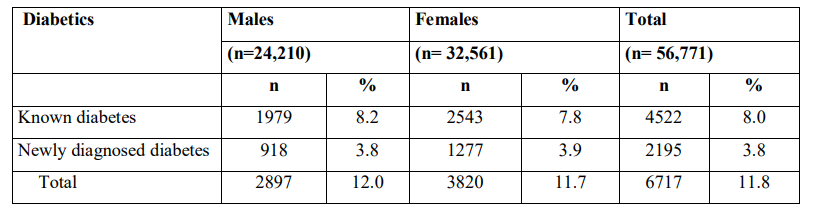
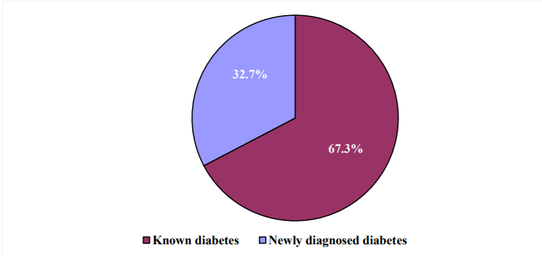
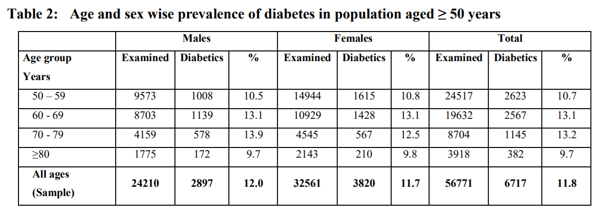
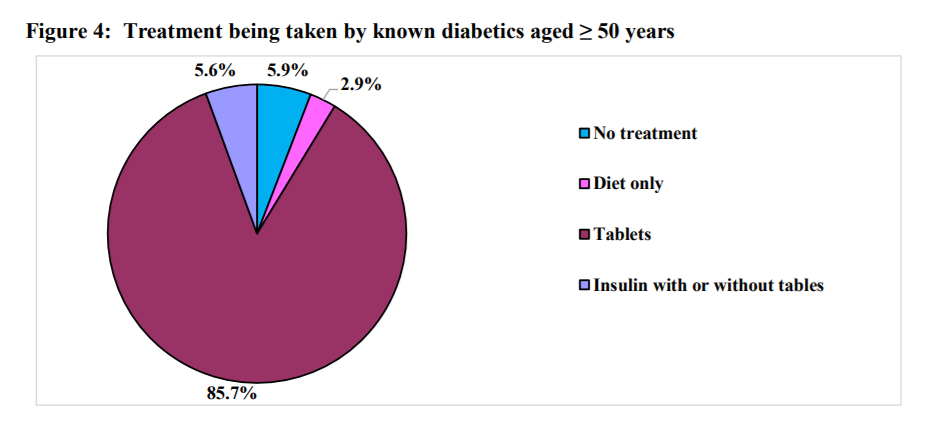
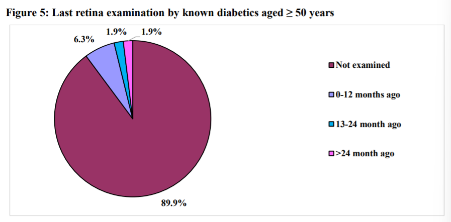
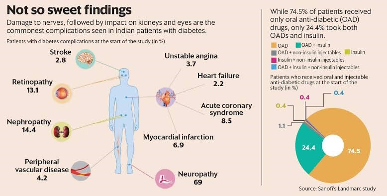

Statistics And Conclusions
According to NATIONAL DIABETES AND DIABETIC RETINOPATHY SURVEY INDIA 2015-2019
The survey was conducted with 21 districts included in the country, the total sample size for survey was 63,000 people aged 50 years and above.
The districts in which the survey was conducted are shown in the map given below:

Prevalence of Diabetes
Among 63,000 enumerated population aged ≥50 years in 21 districts, 56771 (90.1%) were assessed for diabetes. The prevalence of diabetes was 11.8%. The prevalence of KD was 8.0% and ND was 3.8%. Males showed a similar prevalence of diabetes (12%) as females (11.7%). Known diabetics comprised 67.3% participants, while 32.7% were new diabetics. Highest prevalence of diabetes was observed in 70-79 years age group at 13.2%. Nearly 40% of KDs were diagnosed 1-4 years back while 5.3% of KDs reported diagnosis within past one-year.
Known and Newly diagnosed diabetes
Table: Prevalence of known and new diabetes among assessed in population aged ≥ 50 years 
From the above table we can conclude that:
- 8% are known diabetes and 3.8% are newly diagnosed diabetes
- Among 8% known diabetes males are considerably higher than females in known diabetes.
- Whereas females are a little higher for newly diagnosed diabetes than males.
The statistics of the known diabetes and newly known diabetes is shown below as a pie chart
Diabetes and Age

From the above table we can conclude that:
- Diabetes is more prevalent in age groups of 70-79
- This is followed by 60-69 age group
- Among the more prevalent group of 70-79 proportion of men is greater than women
Treatment

From above we can conclude that
- Most of the diabetic people rely on tablets. From this we can say that most diabetic people are of type-2
- There are 5.9% people diagnosed with diabetes and not undergoing any treatment. This is a case to be considered. They are to be provided with awareness regarding the importance of treatment for diabetes
- We can also see about 2.9% only following proper diet.
Retina Examination
It is known that diabetes can cause damage to retina. So proper checkup and diagnosis is essential.

From the pie chart above we can conclude that
- Majority of diabetic people have not undergone any examination of retina.
- We can conclude that a lot of people are not considering the side effects of diabetes seriously
- So it is crucial to bring awareness regarding the importance of regular checkup of retina, kidney,etc.
Impact on organs
In the below diagram we can notice the percentage of people with diabetes who had the below effects on their kidneys
- About 69 percent suffer from Neuropathy
- Retinopathy and Nephropathy also can be seen in significant percentage
- Hence, its important that we not only take care of ourselves at the time of diabetes but also be careful regarding its effects.
- We have to keep an eye on all the systems in our body that get effected by diabetes as shown below and can follow natural remedies to make them stay healthy
- Those who do not suffer from diabetes have to understand the side effects of diabetes and should know the reasons that lead to diabetes and must try to avoid them.
In the right side of the image we can see the statistics of medication. It could be oral anti-diabetic drugs(OAD), insulin, both.This data is based on the Sanofi's Landmarc study
From the above pie chart we can conclude that:
- There are a high proportion of patients who rely on only OAD